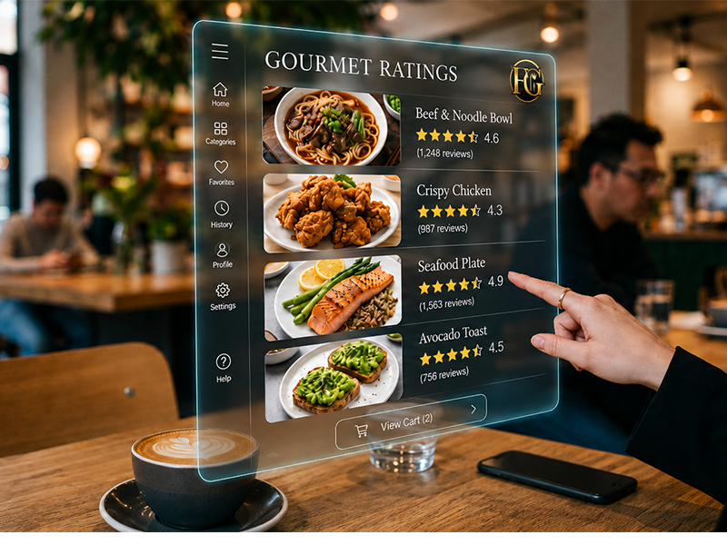
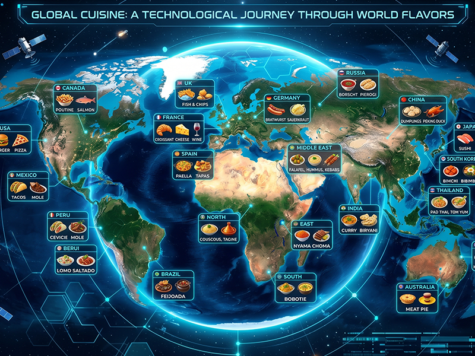
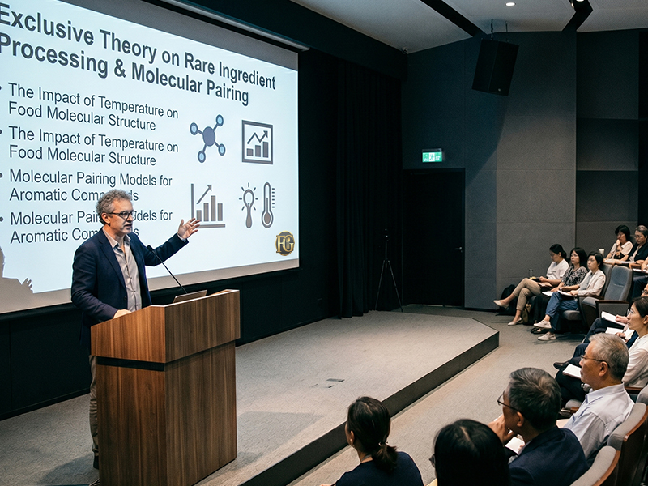

Menu differentiation is the lifeblood of modern haute cuisine. We provide global ingredient reconnaissance and exclusive supply chains for Michelin-starred kitchens, top-tier luxury boutique hotels, and elite private clubs — delivering the unreplicable competitive edge. A diferenciacao de menu e a alma da alta gastronomia moderna. Oferecemos reconhecimento global de ingredientes e cadeias de suprimentos exclusivas para cozinhas estreladas, hoteis boutique de luxo e clubes privados de elite — entregando uma vantagem competitiva inigualavel.
We do not offer a fixed catalog. We act as your specialized culinary intelligence atelier, aligning rare global terroirs with your upcoming seasonal menu vision. Nao oferecemos um catalogo fixo. Atuamos como seu atelie especializado em inteligencia culinaria, alinhando terroirs globais raros com a visao do seu proximo menu sazonal.
Gain direct access to micro-lot productions, rare wild harvests, and geographically restricted estate goods that never make it to open commercial channels. Tenha acesso direto a producoes de micro-lotes, colheitas selvagens raras e produtos agricolas de origem restrita que nunca chegam aos canais comerciais abertos.
From high-altitude terroirs straight to your kitchen workspace. Our bespoke logistics ensure precise temperature tracking, preserving critical volatility and subtle aroma integrity. Dos terroirs de alta altitude direto para a sua cozinha. Nossa logistica sob medida garante um rastreamento preciso de temperatura, preservando a volatilidade critica e a integridade sutil dos aromas.
We provide detailed sensory profiling, molecular pairing data, and origin documentation for every curated item, empowering your culinary team's narrative mapping. Fornecemos perfis sensoriais detalhados, dados de harmonizacao molecular e documentacao de origem para cada item selecionado, potencializando o mapeamento narrativo da sua equipe culinaria.
Every single shipment undergoes independent laboratory multi-toxin screening and sensory verification before dispatch. 100% pure, 0% compromise. Cada remessa passa por triagem laboratorial independente de multitoxinas e verificacao sensorial antes do envio. 100% puro, 0% de concessao.
We tailor exceptional strategic support for global fine dining partners, converting raw global terroirs into enduring kitchen competitive advantages. Moldamos um suporte estrategico excepcional para parceiros de alta gastronomia, convertendo terroirs globais em vantagens competitivas de cozinha.

Um sistema premium de avaliacao de ingredientes e cadeia de suprimentos, projetado para quantificar com precisao o potencial de cada ingrediente.

Profunda percecao da estetica gastronomica de vanguarda, moldando uma identidade unica para o seu novo menu sazonal.

Treinamento exclusivo em manuseio de ingredientes, controle de temperatura e harmonizacao molecular para libertar a maxima expressao sensorial.
Empowering Renowned Kitchens & Hospitality Groups Globally